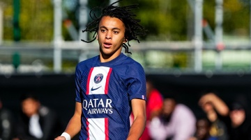
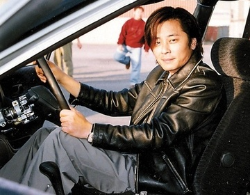
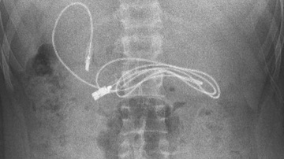
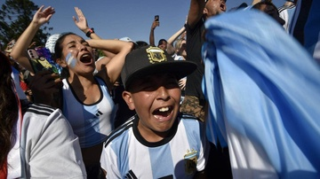
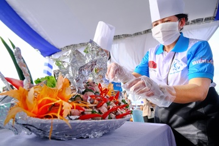
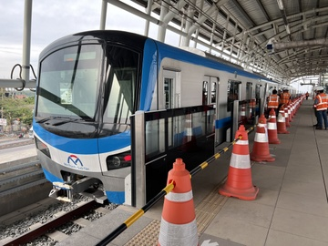
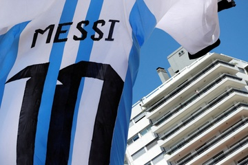
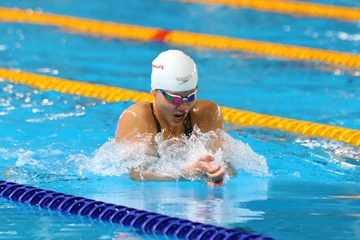
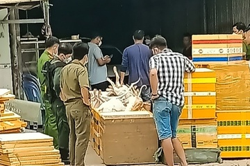

Cái lý của FIFA khi tổ chức trận tranh hạng ba World Cup
Đến hẹn lại lên, sự cần thiết của trận tranh hạng ba World Cup lại trở thành chủ đề nóng khi trận đấu giữa Morocco và Croatia đang đến gần.
Nguyễn Thái Luyện nói Alibaba có đủ tiền trả lại khách hàng
"Quý vị cứ đối chiếu hồ sơ để giữ quyền lợi cho mình theo đúng giao dịch dân sự công ty đã cam kết. Alibaba sẽ trả toàn bộ số tiền gốc và lãi theo hợp đồng", Nguyễn Thái Luyện nói.
- 
Em trai 15 tuổi của Mbappe ra mắt đội một PSG
Ethan Mbappe lần đầu đá cho đội một PSG trong chiến thắng 2-1 trước Paris FC ở trận giao hữu hôm 16/12.
- 
Cuộc sống của nam ca sĩ từng bị 'đầu độc thủy ngân'
Vương Kiệt cho biết đã phần nào lấy lại được giọng hát sau thời gian dài điều trị. Tuy nhiên, ông không có ý định quay lại showbiz.
Đoàn Văn Hậu sắp chia tay CLB Hà Nội
Hậu vệ tuyển Việt Nam nhiều khả năng thanh lý sớm hợp đồng với CLB Hà Nội để chuẩn bị chuyển sang một đội bóng mới.
Phố Wall chao đảo
Phố Wall vừa trải qua phiên giao dịch đầy biến động. Chứng khoán rớt mạnh vì hàng nghìn tỷ USD quyền chọn chỉ số sắp hết hạn và sự quyết liệt của Fed trong cuộc chiến với lạm phát.
Thạch Thu Thảo giải thích việc nợ tiền nhà thiết kế
Thạch Thu Thảo cho biết ê-kíp của cô đã liên hệ với nhà thiết kế Ngô Mạnh Đông Đông để giải quyết việc nợ tiền thiết kế trang phục truyền thống.
- 
Thiếu niên 15 tuổi nhập viện vì có dây sạc dài gần 1 mét trong dạ dày
Các bác sĩ của bệnh viện ở Diyarbakir (Thổ Nhĩ Kỳ) đã chụp X-quang và phát hiện trong dạ dày của bệnh nhân 15 tuổi có đoạn dây sạc dài gần 1 mét.

Mặc lệnh cấm, quần đùi, áo crop top vẫn xuất hiện tại World Cup 2022
Daniela Crawford đã lo lắng về những quy tắc trang phục tại Qatar. Nhưng giống như nhiều fan nữ khác, cô nói rằng mình chưa gặp bất kỳ rắc rối nào.
- 
CĐV Argentina 'đốt hết tiền tiết kiệm' mua vé trận chung kết World Cup
Hàng trăm cổ động viên (CĐV) Argentina tức giận vì không mua được vé trận chung kết. Giá vé tại chợ đen cũng vì thế mà tăng chóng mặt.
- 
Những món ngon độc đáo được chế biến từ cá tra
Khoảng 50 món ăn được chế biến và giới thiệu tại Lễ hội cá tra lần thứ nhất năm 2022, vừa diễn ra tại TP Hồng Ngư (tỉnh Đồng Tháp) trong hai ngày 16-17/12.
Giáo viên Nhật Bản tử vong vì làm việc quá sức
Ở Nhật Bản, giáo viên đối mặt với văn hóa làm thêm quá sức, trung bình 123 giờ mỗi tháng.
- 
Metro số 1 được kích hoạt chờ thử nghiệm ở ga Bình Thái
Trước ngày thử nghiệm tàu metro ở đoạn trên cao, Ban Quản lý đường sắt đô thị TP.HCM (MAUR) cho biết đoàn tàu vừa được thử nghiệm nội bộ ở ga Bình Thái (TP Thủ Đức).
- 
Liên hệ tình cờ giữa bóng đá và lạm phát Argentina
Trong 2 lần vô địch World Cup trước đây của tuyển Argentina, lạm phát của nước này đều ở mức rất cao. Năm nay, tỷ lệ lạm phát ở đây cũng dự kiến lên tới 3 con số.
Hồi kết cho cuộc đua 'Vua phá lưới' World Cup 2022
World Cup 2022 chỉ còn cách lễ bế mạc 2 trận đấu. Xuyên suốt gần một tháng, người hâm mộ được chứng kiến loạt bất ngờ, đặc biệt phải kể đến cuộc đua “Vua phá lưới” gay cấn.
Lễ cưới Khánh Thi - Phan Hiển tại nhà thờ
Sau lễ ăn hỏi và rước dâu tại nhà riêng, Khánh Thi - Phan Hiển tổ chức hôn lễ tại nhà thờ vào ngày 17/12.
- 
Ánh Viên giành 9 HCV tại Đại hội Thể thao Toàn quốc
Nguyễn Thị Ánh Viên góp công lớn giúp đoàn Quân đội dẫn đầu môn bơi tại Đại hội Thể thao Toàn quốc 2022
'Avatar 2' chia rẽ khán giả và giới phê bình
Bom tấn khoa học viễn tưởng lớn nhất 2022 ngay khi công chiếu đã nhận về nhiều ý kiến trái chiều liên quan tới nội dung và kịch bản.
Phân khúc ôtô hạng A dần mất sức hút
Kể từ giữa quý II, phân khúc ôtô hạng A ngày càng thiếu vắng nhiều sự lựa chọn khi các cái tên dần rút lui, tạo bước đệm để Hyundai Grand i10 trở về vị trí bán chạy nhất phân khúc.
- 
Kiểm tra quán cầy tơ, phát hiện hơn 100 con chó nghi bị bắt trộm
Kiểm tra quán cầy tơ tại huyện Đức Hòa (Long An), lực lượng chức năng phát hiện hơn 100 con chó đã chết, nghi thu mua từ những người trộm cắp.